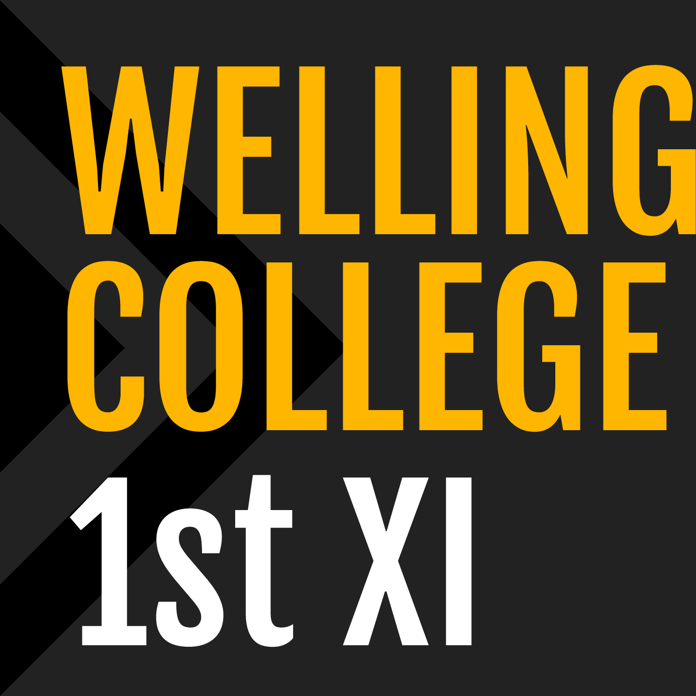
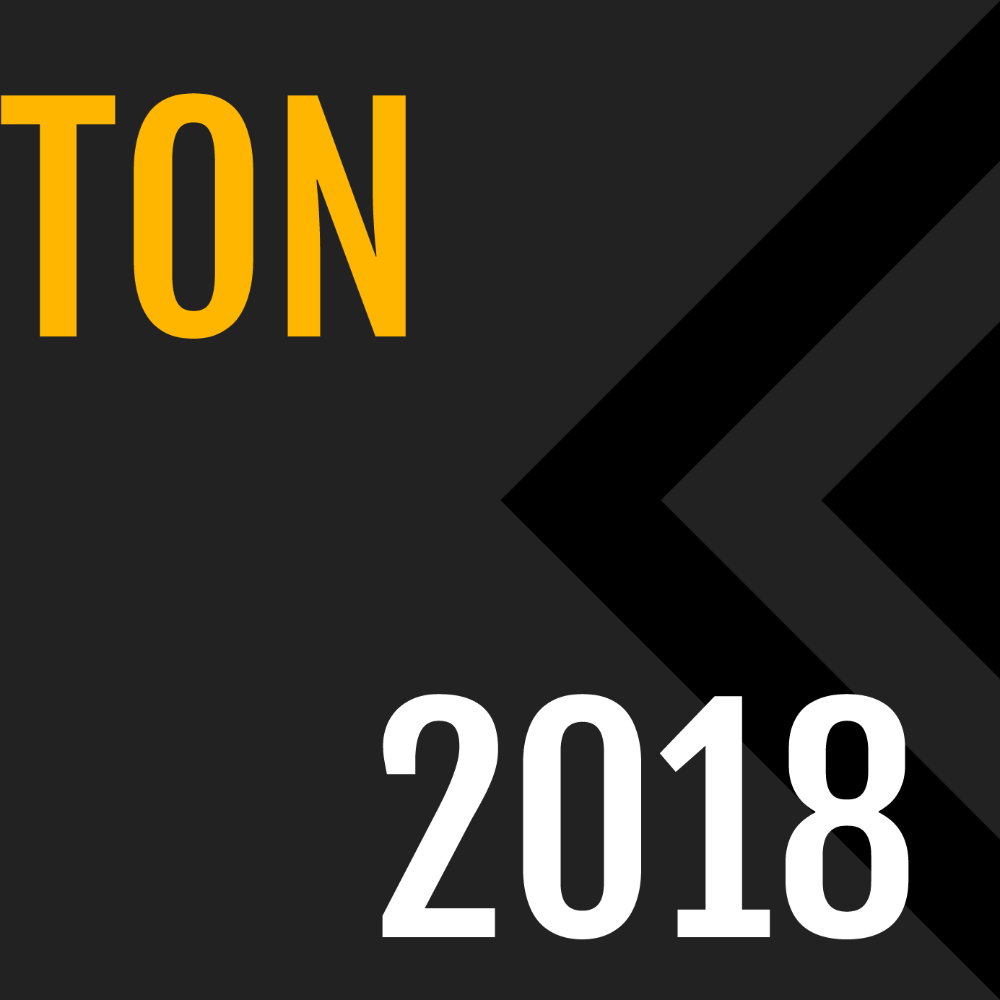
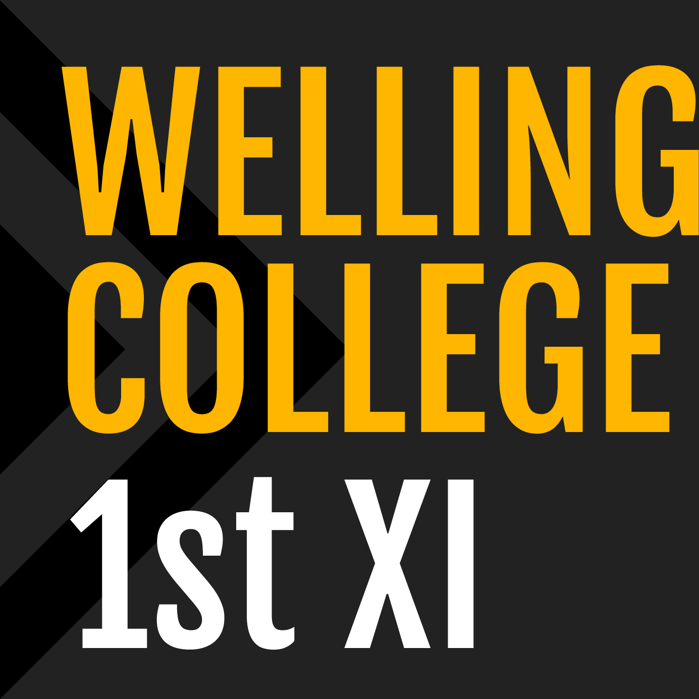
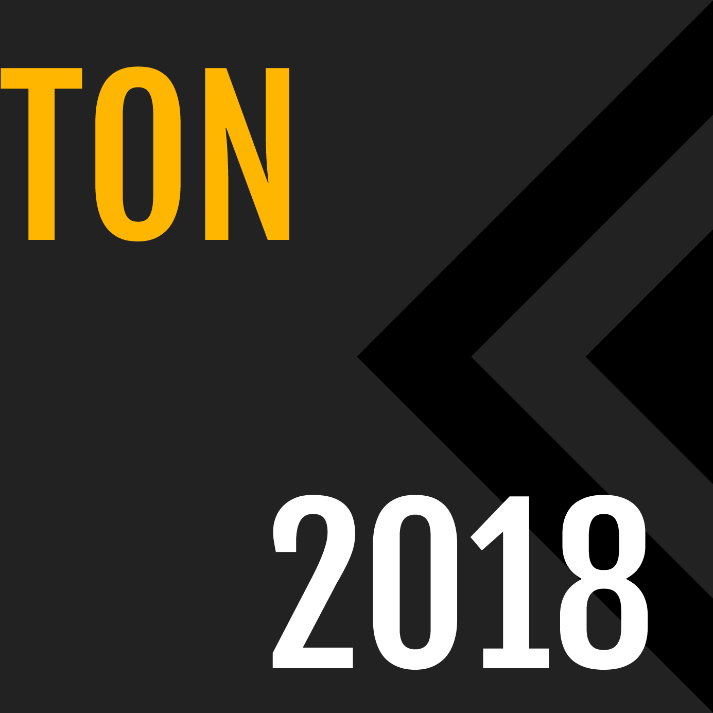
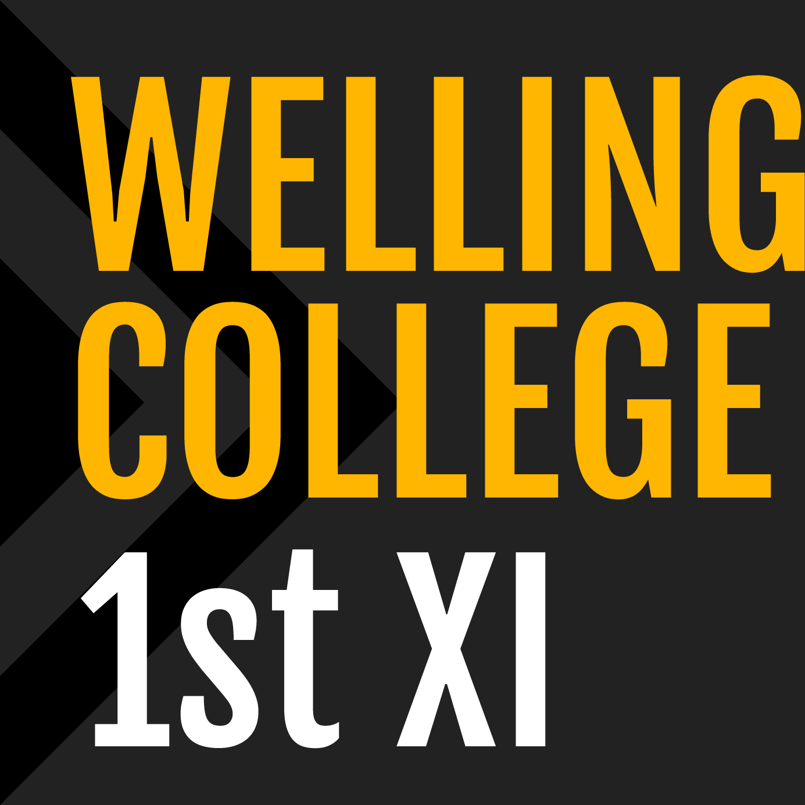
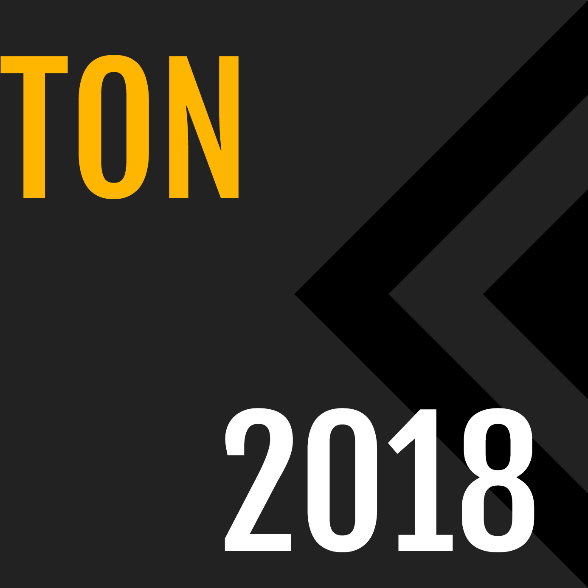

It's been an amazing oportunity to work through the design process for the Wellington College 1st XI Football Team social media pages. I got to work alongside the CEO of Ocean Design, Blair Mainwaring, who guided me creating a brand identity for the team. I am now in charge of making posts and applying the brand identity I created across the social media platforms (Instagram and Facebook). I've found it to be great fun and exciting work. Getting to work in the offices at Ocean Design is a glimpse for me as to what it could be like to be a professional graphic designer.


Playing in the Combined Ukulele Orchestra of Wellington College and Wellington Girls' College is great fun. I joined in 2016 and along the way I've made great friends through this club. It's a chance for me to express my more crazy and outgoing extaverted side as an ambivert.
In 2016 and 2017 I photographed the Year 9 English classes' end of year Shakespeare productions with a DSLR camera alongside a co-photographer (Ben Waldron in 2016 and Josh Baxter in 2017). For both years I lead the photography effort and managed the large data produced from the hundreds of high quality photos. I sorted the photos on a shared database for my co-photographers, teachers, and school staff members to access. Finally, I put together an in-depth 'Oscars' like awards presentation that displayed and revealed the award winners on a big screen as the Year 9s' awards were announced.
I met so many new people and made great friends during my time with Stage Challenge. We all worked realy hard together, commiting hours of practice into our dance. It was incredible to watch everyone grow from where we began - as most of us had never really danced before in our lives - to performing at Te Rauparaha Arena and the Michael Fowler Centre in front of huge audiences.
40 laps. $156.50 donated. Wellington College's Runathon pushed me to the limit in the efforts made to help out the people of Ibwera, Tanzania. I gave a speech, while hardly being able to stand after all the running from the previous day, at my local church about this charity drive I was a part of. To my suprise, the congregation were enthused by my short, yet humourous, speech and many kind and geneous people donated as I had chats with them afterwards.
I’m certainly not a great singer, but that didn’t stop me from really enjoying my time ‘growing older’ with the 2017 Barbershop ‘Basin Boys’ from Wellington College. We even got to perform right in front of Bret McKenzie at the Black and Gold Awards which was thrilling and sort of surreal.